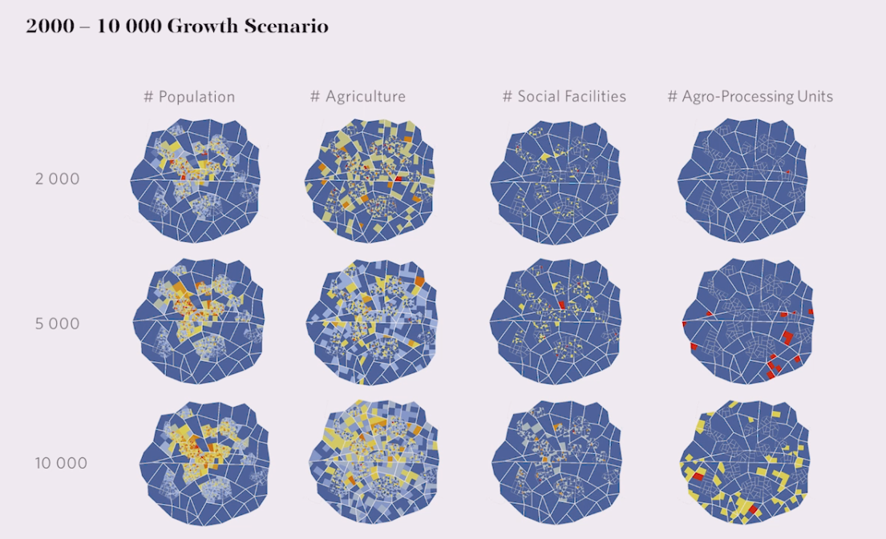
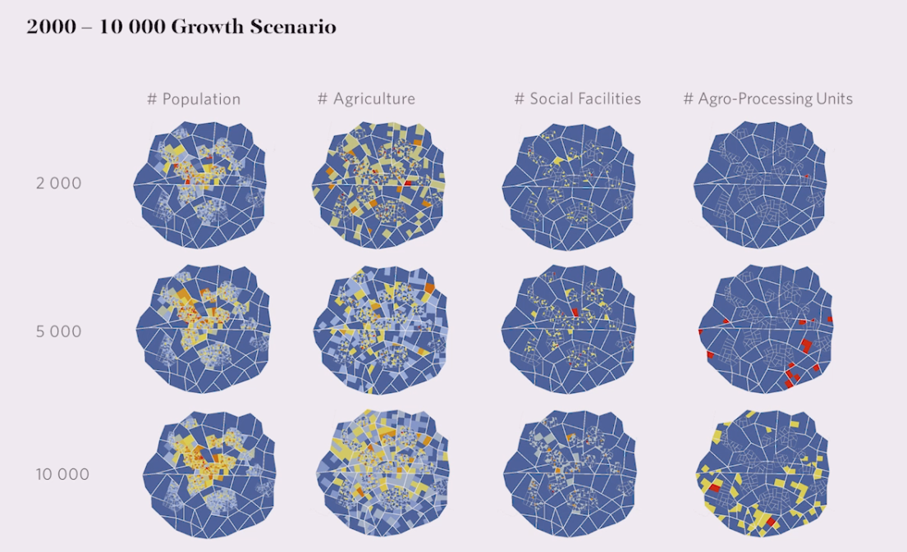
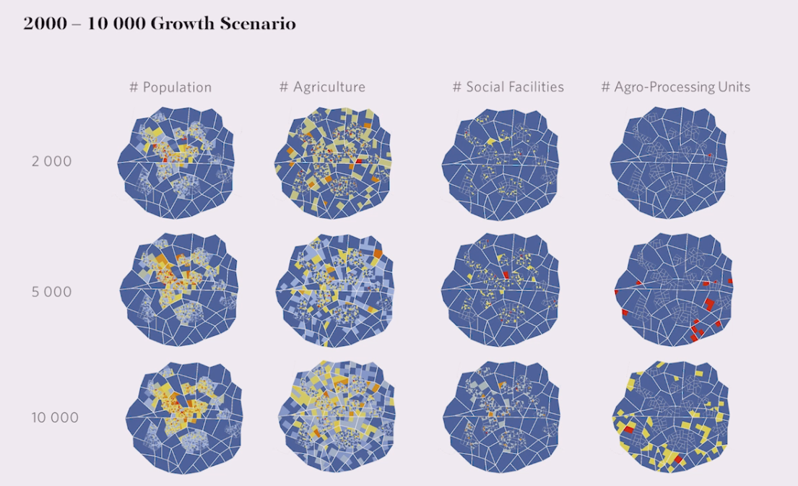

|  |
|  |  |
|-|-|-|
|
|-|-|-|| |  | |
|-|-|-|
Growing cities demand new land. Similar like trees thriving to acquire as much sunlit surface by evaluating their environment for bright areas, cities evaluate their surroundings by ecologic, economic and social aspects to allocate different functions at suitable positions. For different city elements such as land uses, user groups or street blocks profiles can be created that define what evaluation criteria matter to them. Combining evaluation, profiles and an iterative process of step-wise acquiring of areas, a growth process can be simulated.
Evaluation Criteria
Analysis modules allow to measure the surrounding environment for different criteria such as topography, views or closeness to functions.
Profiles for Scoring
Profiles represent heuristics for decision-making. I.e. industries rather prefer to be close to main roads and residential areas not. Both weight the evaluated criteria differently. Assuming that the decision-making does not change over time, these weights can be stored in profiles. The weighting and evaluation criteria afterwards server as an input for the Evaluation Score module and allows to see, which areas are preferred by each profile.
Simulation
Using multiple profiles such as industry, residential and commercial functions, they prefer to grow on different areas. The simulation assigns step by step areas to each profile up until each profile acquired the demanded area or no surrounding area is left.
Depending on the order in which profiles can acquire areas, some will take away preferred areas of others. The order and iteration process has influence on the result of the simulation.
Priorisation order
The step-wise iteration of the simulation can be simple and fast or elaborate and slower.
Most simple and fast is by assigning areas first fully to one profile then to the next.
More satisfying results can be reached by choosing each step which profile currently has priority and assigning the most suitable area for it.
The most advanced method would be to reevaluate the surroundings each iteration step. In this way, the profiles can act in relation to each other informing each others growth.
For land use allocation the evaluation of topography, distances to streets, point of interests or other functions could influence the placement of profiles such as industrial, residential, commercial areas. The profiles could be even more nuanced like heavy or light industry.
Similar to land use allocation by function, user group profiles could be used to simulate property acquisition by rather personal factors. Students: living close to university and city center. Wood worker: Setting up a workshop close to forest and market.
Growth Simulation can be applied to the Boundary module. Since it is based on Evaluation Score, too. Multiple boundaries can represent i.e. administrative areas or blocks of small communities such as families. Each community has its own center, but is connected to other communities. The resulting street morphology is in comparison to rigid grids more organic and is oriented to the communal aspect.
Simulation represents an abstract model of observed behaviour in real-life and cannot be absolute.
Setting up weights of profiles implements subjective observations and relies on the expertise of planners and decision-makers, be it human or machine.